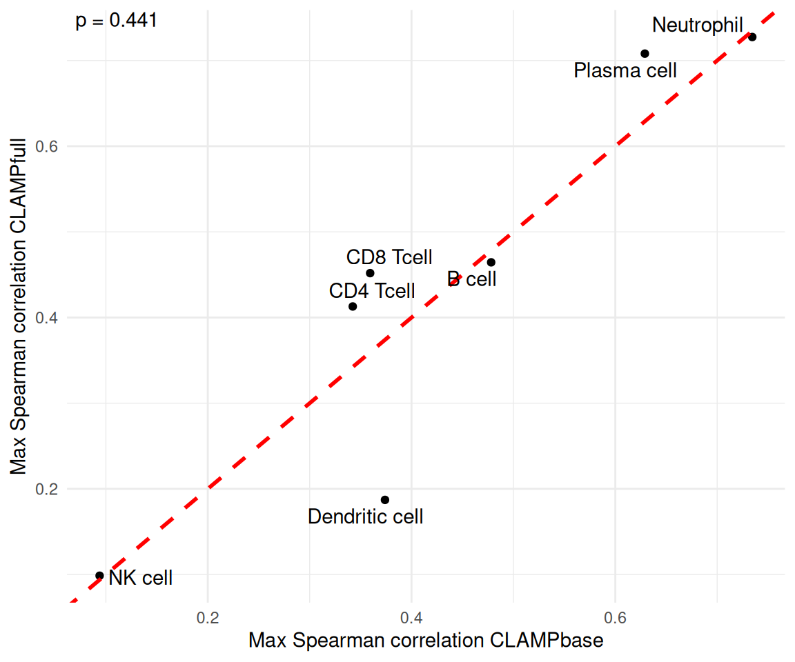
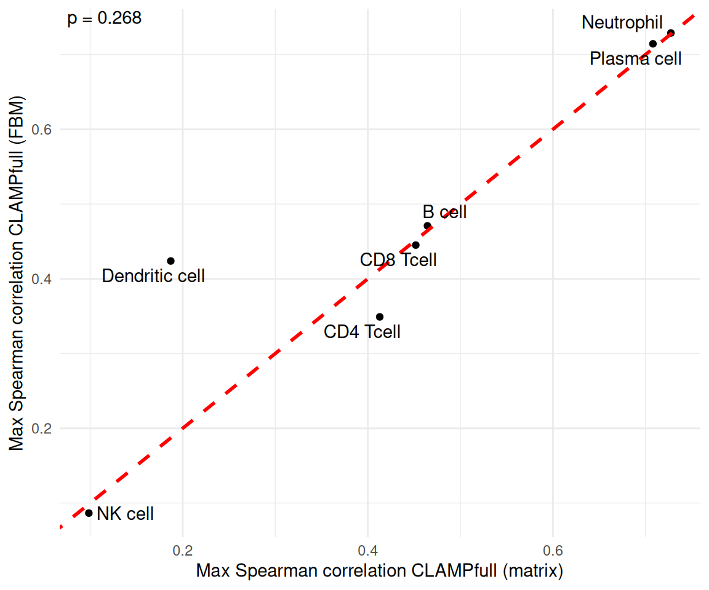

vignettes/comparing_clampbase_clampfull.Rmd
comparing_clampbase_clampfull.RmdThis vignette compares the two main models in the CLAMP package:
Using a small human whole blood RNA-Seq dataset, we demonstrate that
incorporating pathway priors in CLAMPfull improves the
biological interpretability of latent variables compared to the baseline
CLAMPbase model.
We illustrate how to:
CLAMPbase and CLAMPfull
models,
# How to download pathway and cell marker libraries from Enrichr.
# Not run during vignette build to avoid network calls; pre-fetched
# .rds files are loaded in the next chunk instead.
gmtList <- list(
CellMarkers = getGMT(
paste0(enrichr_url, "?mode=text&libraryName=CellMarker_2024"),
"CellMarker_2024"
),
KEGG = getGMT(
paste0(enrichr_url, "?mode=text&libraryName=KEGG_2021_Human"),
"KEGG_2021_Human"
)
)
# Load pre-fetched gene set libraries bundled with the package
gmtList <- list(
CellMarkers = readRDS(system.file("extdata", "CellMarker_2024.rds", package = "CLAMP")),
KEGG = readRDS(system.file("extdata", "KEGG_2021_Human.rds", package = "CLAMP"))
)
# Combine into a single sparse matrix
pathMatCell <- gmtListToSparseMat(gmtList)
# Load additional xCell reference matrix
data("xCell")
# Match pathways to the gene space of whole blood
matchedPathsWB <- getMatchedPathwayMatList(
pathMatCell,
xCell,
new.genes = rownames(dataWholeBlood),
min.genes = 2
)
set.seed(1)
wb_svd_k <- select_svd_k(dataWholeBlood)
wb_svd <- compute_svd(dataWholeBlood, k = wb_svd_k)
wb_clamp_k <- select_clamp_k(wb_svd,
n_samples = ncol(dataWholeBlood),
svd_k = wb_svd_k
)
wb_clamp_k## [1] 8
wb_clamp_base <- CLAMPbase(
dataWholeBlood,
svdres = wb_svd,
clamp_k = wb_clamp_k,
trace = FALSE,
adaptive.p = 0.05
)
wb_clamp_full <- CLAMPfull(
dataWholeBlood,
priorMat = matchedPathsWB,
svdres = wb_svd,
clamp.base.result = wb_clamp_base,
clamp_k = wb_clamp_k,
trace = TRUE,
use_cpp = TRUE
)This plot compares the maximum Spearman correlation for each major
blood cell type between CLAMPbase and
CLAMPfull.
Points above the red dashed line indicate improved correspondence when biological priors are included.
Most cell types show higher correlations under
CLAMPfull, demonstrating that integrating pathway
information helps capture more biologically meaningful latent
variables.
output <- compareBs(
wb_clamp_base,
wb_clamp_full,
celltypeTargets,
method = "s",
xlab = "CLAMPbase",
ylab = "CLAMPfull"
)## [1] 8 36
## [1] 8 36
output$plot
CLAMPbase and CLAMPfull now return
B (gene loadings, LVs × genes) and Z (sample
scores, LVs × samples) as proper named matrices.
# B: gene loadings (LVs × genes)
dim(wb_clamp_full$B)## [1] 8 36
wb_clamp_full$B[1:3, 1:4]## BD8001 BD8002 BD8003 BD8004
## LV1 1.5208805 1.019819 1.52010647 1.723528
## LV2 -0.3858266 1.290221 -2.01065989 -2.148343
## LV3 -0.7590255 -1.089290 -0.02649019 -3.321543
# Z: sample scores (LVs × samples)
dim(wb_clamp_full$Z)## [1] 11530 8
wb_clamp_full$Z[1:3, 1:4]## LV1 LV2 LV3 LV4
## GAS6 0 0.0000000 0 0
## MMP14 0 0.0000000 0 0
## MARCKSL1 0 0.3406663 0 0We verify that CLAMPfull produces identical results when
using a file-backed matrix (FBM) input instead of an in-memory matrix.
We reuse the same pre-computed SVD and clamp_k so that any
differences are attributable solely to the matrix format, not the
randomized SVD.
dataWholeBloodFBM <- bigstatsr::as_FBM(dataWholeBlood)
wb_clamp_full_fbm <- CLAMPfull(
dataWholeBloodFBM,
priorMat = matchedPathsWB,
svdres = wb_svd,
clamp.base.result = wb_clamp_base,
clamp_k = wb_clamp_k,
trace = TRUE,
use_cpp = TRUE
)The FBM implementation produces identical results:
output <- compareBs(
wb_clamp_full,
wb_clamp_full_fbm,
celltypeTargets,
method = "s",
xlab = "CLAMPfull (matrix)",
ylab = "CLAMPfull (FBM)"
)## [1] 8 36
## [1] 8 36
output$plot
## R version 4.6.0 (2026-04-24)
## Platform: x86_64-pc-linux-gnu
## Running under: Ubuntu 24.04.4 LTS
##
## Matrix products: default
## BLAS: /usr/lib/x86_64-linux-gnu/openblas-pthread/libblas.so.3
## LAPACK: /usr/lib/x86_64-linux-gnu/openblas-pthread/libopenblasp-r0.3.26.so; LAPACK version 3.12.0
##
## locale:
## [1] LC_CTYPE=C.UTF-8 LC_NUMERIC=C LC_TIME=C.UTF-8
## [4] LC_COLLATE=C.UTF-8 LC_MONETARY=C.UTF-8 LC_MESSAGES=C.UTF-8
## [7] LC_PAPER=C.UTF-8 LC_NAME=C LC_ADDRESS=C
## [10] LC_TELEPHONE=C LC_MEASUREMENT=C.UTF-8 LC_IDENTIFICATION=C
##
## time zone: UTC
## tzcode source: system (glibc)
##
## attached base packages:
## [1] stats graphics grDevices utils datasets methods base
##
## other attached packages:
## [1] bigstatsr_1.6.2 CLAMP_0.99.0 BiocStyle_2.40.0
##
## loaded via a namespace (and not attached):
## [1] gtable_0.3.6 circlize_0.4.18 shape_1.4.6.1
## [4] rjson_0.2.23 xfun_0.57 bslib_0.10.0
## [7] ggplot2_4.0.3 htmlwidgets_1.6.4 GlobalOptions_0.1.4
## [10] ggrepel_0.9.8 lattice_0.22-9 bigassertr_0.1.7
## [13] ps_1.9.3 vctrs_0.7.3 tools_4.6.0
## [16] generics_0.1.4 stats4_4.6.0 parallel_4.6.0
## [19] tibble_3.3.1 cluster_2.1.8.2 pkgconfig_2.0.3
## [22] Matrix_1.7-5 RColorBrewer_1.1-3 S7_0.2.2
## [25] desc_1.4.3 S4Vectors_0.50.0 lifecycle_1.0.5
## [28] compiler_4.6.0 farver_2.1.2 textshaping_1.0.5
## [31] bigparallelr_0.3.2 codetools_0.2-20 ComplexHeatmap_2.28.0
## [34] clue_0.3-68 htmltools_0.5.9 sass_0.4.10
## [37] yaml_2.3.12 glmnet_5.0 pkgdown_2.2.0
## [40] pillar_1.11.1 crayon_1.5.3 jquerylib_0.1.4
## [43] cachem_1.1.0 iterators_1.0.14 foreach_1.5.2
## [46] rsvd_1.0.5 tidyselect_1.2.1 digest_0.6.39
## [49] dplyr_1.2.1 bookdown_0.46 labeling_0.4.3
## [52] splines_4.6.0 cowplot_1.2.0 fastmap_1.2.0
## [55] grid_4.6.0 colorspace_2.1-2 cli_3.6.6
## [58] magrittr_2.0.5 survival_3.8-6 withr_3.0.2
## [61] scales_1.4.0 rmarkdown_2.31 matrixStats_1.5.0
## [64] rmio_0.4.0 bit_4.6.0 otel_0.2.0
## [67] ragg_1.5.2 png_0.1-9 GetoptLong_1.1.1
## [70] evaluate_1.0.5 ff_4.5.2 knitr_1.51
## [73] IRanges_2.46.0 doParallel_1.0.17 irlba_2.3.7
## [76] rlang_1.2.0 Rcpp_1.1.1-1.1 glue_1.8.1
## [79] BiocManager_1.30.27 BiocGenerics_0.58.0 jsonlite_2.0.0
## [82] R6_2.6.1 systemfonts_1.3.2 fs_2.1.0
## [85] flock_0.7